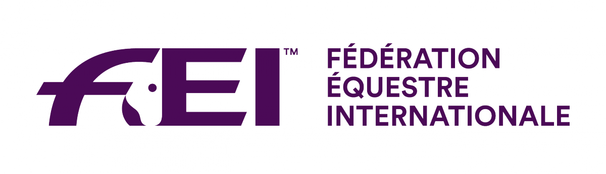

Otros
-

Gran Bretaña confirma su equipo para la Copa de Naciones del CCIO4*-S de Bicton
British Eventing ha anunciado los cuatro binomios que defenderán los colores británicos en la Copa de Naciones del CCIO4*-S de Bicton, programado entre el 27 y el 31 de mayo.
-

El Cerdanya Equestrian Center acogió la Liga Nacional de Completo y el Campeonato de Ponis
El recinto gerundense fue escenario entre el 22 y el 24 de mayo de una doble cita del calendario nacional con el CCN2* correspondiente a la LINCCE 2026 y el Campeonato de Cataluña de Ponis de concurso completo.
-

España vuelve a Saumur con representación en enganches
El CAI de Saumur, del 27 al 31 de mayo en el Hipódromo de Verrie, contará con presencia española en una de las citas consolidadas del circuso europeo de esta disciplina.
-

El GHMA Festival Eventing de Vermont añade un CCI1* a su programa de agosto
El concurso completo de South Woodstock, Vermont, amplía su oferta con una nueva categoría internacional de una estrella. El evento, previsto para el 7-9 de agosto, mantendrá también sus divisiones nacionales desde Beginner Novice hasta Intermedio y las clases FEI hasta CCI3*-S.
-

La FEI levanta las restricciones a Bielorrusia y aborda el Mundial de Raid 2026
El Consejo de la Federación Ecuestre Internacional celebró una teleconferencia el 13 de mayo en la que adoptó resoluciones sobre la participación bielorrusa en competiciones y el Campeonato del Mundo de Raid previsto en Arabia Saudí.
-

Karl Slezak lidera el CCI2*-L de Virginia tras la primera jornada de dressage
El jinete canadiense, medallista olímpico en París 2024, encabeza la clasificación provisional con Herald De La Rose tras lograr 28,4 puntos en la fase inicial del concurso completo.
-

Laura Collett y London 52 buscan su cuarto triunfo consecutivo en Bicton
El binomio británico, campeón olímpico y europeo, intentará este fin de semana una hazaña histórica en el CCI4*-S de Bicton, donde ya ha ganado las tres ediciones disputadas hasta la fecha.